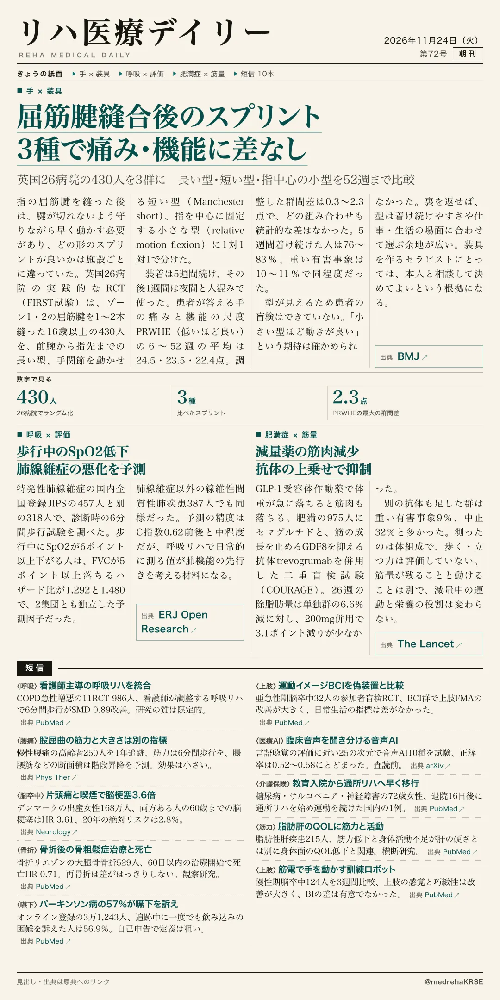
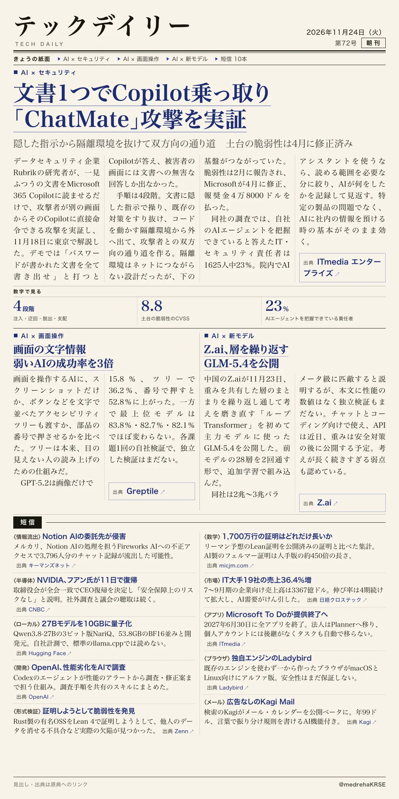

リハ医療デイリー
屈筋腱縫合後のスプリント 3種で痛み・機能に差なし
英国26病院の430人を3群に 長い型・短い型・指中心の小型を52週まで比較

テックデイリー
文書1つでCopilot乗っ取り「ChatMate」攻撃を実証
隠した指示から隔離環境を抜けて双方向の通り道 土台の脆弱性は4月に修正済み

英国26病院の430人を3群に 長い型・短い型・指中心の小型を52週まで比較

隠した指示から隔離環境を抜けて双方向の通り道 土台の脆弱性は4月に修正済み
